Precision agriculture and spatio-temporal analytics
Participants presentation
Agenda
Introduction
Data
DBMS, Big Data, Cloud solutions
Data Analytics
Data Management and Data Governance
Visualization of Data
Statistics & Probability
Processing
Artificial Intelligence (AI)
Machine Learning (ML)
Why is Data and Data Science Important?
Data has become the fuel of industries as companies require data to function, grow and improve their businesses
Analysing a large amount of data to derive meaningful insights, with the help of Data Scientists assist companies in making valuable (and rationalized) decisions
Real world problems can be solved with Data Science
The number of roles for Data Scientists has grown by 650% since 2012.
About 11.5 Million jobs will be created by 2026 according to the U.S. Bureau of Labor Statistics.
Data Science has applications in several fields
Data Science is a very robust field that best fits people who enjoy experimentation and problem-solving
What is Data Science?
“Data Science is about extraction, preparation, analysis, visualization, and maintenance of information. It is a cross-disciplinary field which uses scientific methods and processes to draw insights from data.”
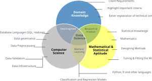
Data Science
Agenda
Introduction
Data
DBMS, Big Data, Cloud solutions
Data Analytics
Data Management and Data Governance
Visualization of Data
Statistics & Probability
Processing
Artificial Intelligence (AI)
Machine Learning (ML)
Data Analytics
Analytics
Why data matters
Data-Driven Innovation
Use of data and analytics to foster new products, processes, and markets
Drive discovery and execution of innovation, achieving new services with a business value
Analytics
A catch-all term for different business intelligence (BI)- and application-related initiatives
E.g., of analyzing information from a particular domain
E.g., applying BI capabilities to a specific content area (e.g., sales, service, supply chain)
Advanced Analytics
(Semi-)Autonomous examination of data to discover deeper insights, make predictions, or generate recommendations (e.g., through data/text mining and machine learning)
Augmented Analytics
Use of technologies such as machine learning and AI to assist with data preparation, insight generation, and insight explanation to augment how people explore and analyze data
“Big data exceeds the reach of commonly used HW and SW environments to capture, manage, and process it within a tolerable elapsed time.” Teradata Magazine article (2011)
“Big data refers to data sets whose size is beyond the ability of typical database software tools to capture, store, manage, and analyze.” The McKinsey Global Institute (2012)
“Big data is data sets that are so voluminous and complex that traditional data processing application software is inadequate to deal with them.” Wikipedia
“A database is a structured and persistent collection of information about some aspect of the real world, organized and stored in a way that facilitates efficient retrieval and modification. The structure of a database is determined by an abstract data model. Primarily, it is this structure that differentiates a database from a data file.”
Relational database
From databases to data platforms
At the beginning, computer science was seen as a subsidiary discipline that makes information management faster and cheaper
… but did not create (new) profits in itself
The main goal of databases in companies has been that of storing operational data[@DBLP:journals/cacm/Codd70]
Data generated by operations carried out within business processes
Online transaction processing (OLTP) is a type of database system used in transaction-oriented applications, such as many operational systems.
“Online” refers to the fact that such systems are expected to respond to user requests and process them in real-time.
Large number of database transactions (writing and reading data) in real-time
From databases to data platforms
An exponential increase in operational data has made computers the only tools suitable for decision-making performed by business users
The massive use of techniques for analyzing enterprise data made information systems a key factor to achieve business goals
The role of computer science in companies has radically changed since the early 70’s.
ICT systems turned from simple tools to improve process efficiency…
… into key factors of company organizations capable of deeply impacting on the structure of business processes
Problem: how do we manage data heterogeneity?
From databases to data platforms
Schemaless databases
There is no predefined schema that the data must conform to before being added to the database. As a result, you don’t need to know the structure of your data, enabling you to store all your data more easily and quickly.
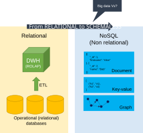
NoSQL
Problem: how do we transform data into actionable business insights?
From databases to data platforms
Big Data must be transformed into Small Data so that it can be exploited for decision-making purposes
Small data is data that is “small” enough for human comprehension.
It is data in a volume and format that makes it accessible, informative and actionable.
Big vs small data
From databases to data platforms
Scenario:
Large company, with several branches
Managers wish to quantify and evaluate the contribution given from each branch to the global profit
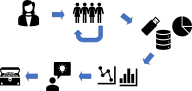
Typical scenario
From databases to data platforms
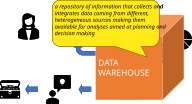
Data Warehouse
From databases to data platforms
Evolving generations of data platforms
From databases to data platforms
Data Warehouse (DWH)[@golfarelli2009data]
“A collection of data that supports decision-making processes. It provides the following features: subject-oriented, integrated and consistent, not volatile.”
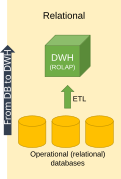
DWH
From databases to data platforms
A DWH is a collection of data that supports decision-making processes. It provides the following features:
It is subject-oriented;
It is integrated and consistent;
It shows its evolution over time and it is not volatile
The multidimensional model is the key for representing and querying information in a DW
(Business) Facts of interest are represented in (hyper) cubes where:
Each cell stores numerical measures that quantify the fact from different points of view;
Each axis is a dimension for analyzing measure values;
Each dimension can be the root of a hierarchy of attributes used to aggregated measure values
Online analytical processing (OLAP) to answer multi-dimensional analytical queries.
Interactive sessions of analysis reading large amounts of data.
From databases to data platforms
Querying the cube with OLAP operators: roll up
Multidimensional cube
Roll up
From databases to data platforms
Querying the cube with OLAP operators: drill down
Roll up
Drill down
From databases to data platforms
The Dimensional Fact Model[@DBLP:journals/ijcis/GolfarelliMR98] is a graphical conceptual model for DWH design, devised to:
create an environment in which user queries may be formulated intuitively
make communication possible between designers and end users with the goal of formalizing requirement specifications
build a stable platform for logical design (independently of the target logical model)
“A DL is a central repository system for storage, processing, and analysis of raw data, in which the data is kept in its original format and is processed to be queried only when needed. It can store a varied amount of formats in big data ecosystems, from unstructured, semi-structured, to structured data sources.”
Data lake
Data lakehouse [@armbrust2021lakehouse]
Data lakehouse
Data management architecture that combines the flexibility, cost-efficiency, and scale of data lakes with the data management and ACID transactions of DWHs, enabling business intelligence (BI) and machine learning (ML) on all data
Key technologies used to implement Data Lakehouses
Data lakes (or lakehouses) have increasingly taken the role of data hubs
Eliminate up-front costs of ingestion and ETL since data are stored in the original format
Once in DL, data are available for analysis by everyone in the organization
Drawing a sharp line between storage/computation/analysis is hard
Is a database just storage?
What about SQL/OLAP?
Blurring of the architectural borderlines
DL is often replaced by “data platform” or “data ecosystem”
Encompass systems supporting data-intensive storage, computation, analysis
From databases to data platforms
Data platform
A unified infrastructure that facilitates the ingestion, storage, management, and exploitation of large volumes of heterogeneous data. It provides a collection of independent and well-integrated services meeting end-to-end data needs.
Unified: is conceptually a data backbone
Independent: a service is not coupled with any other
Well-integrated: services have interfaces that enable easy and frictionless composition
End-to-end: services cover the entire data life cycle
Rationale: relieve users from the complexity of administration and provision
Not only technological skills, but also privacy, access control, etc.
Users should only focus on functional aspects
From databases to data platforms
Are we done? No!
Lacking smart support to govern the complexity of data and transformations
Data transformations must be governed to prevent DP from turning into a swamp
Amplified in data science, with data scientists prevailing over data architects
Leverage descriptive metadata and maintenance to keep control over data
Which functionalities for (automated) data management can you think about?
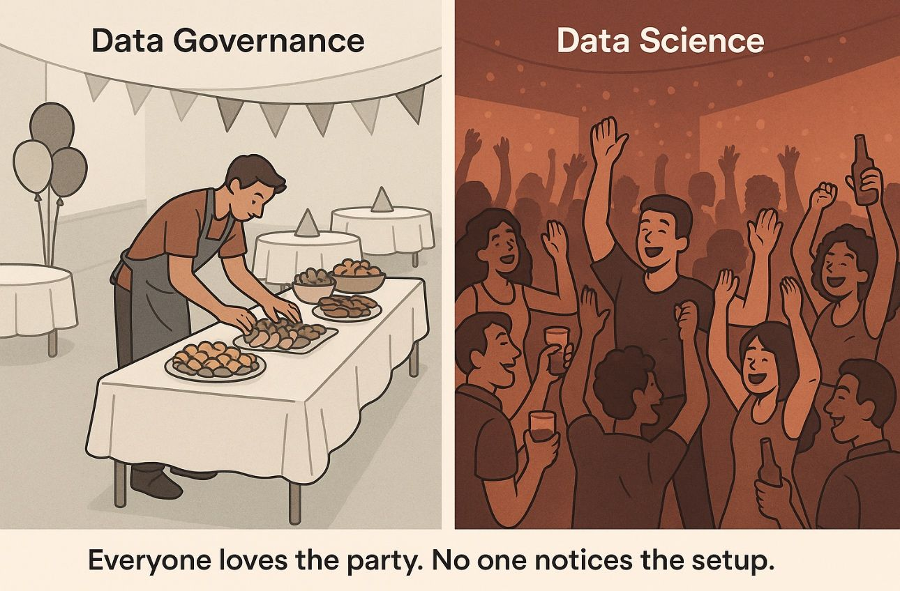
Data governance
Managing data platforms
Tracking data pipelines: Data provenance
Tracking changes: Data versioning
Saving storage: Compression
Understanding the data: Data profiling
Integrating data sources: Entity resolution
…
Data governance
Data governance
Techniques to ensure that data is secure, private, accurate, available, and usable
It includes the actions people must take, the processes they must follow, and the technology that supports them throughout the data life cycle
Every organization needs data governance since industries proceed on their digital-transformation journeys
A data steward is a role that ensures that data governance processes are followed and that guidelines are enforced, and recommends improvements to data governance processes.
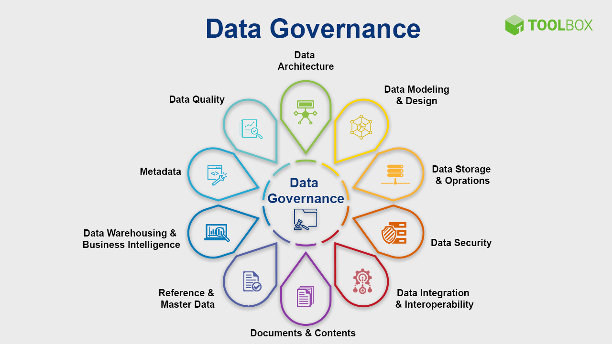
Data governance
On-premises vs cloud
First installations were primarily on-premises
Installation: how do I set up a new machine?
Networking: how do I cable dozens of machines?
Management: how do I replace a broken disk?
Upgrade: how do I extend the cluster with new services/machines?
(energy and cooling, software licenses, insurance…)
Cloud providers are mature and offer comprehensive support for big data ecosystems.
Resource pooling (infrastructure, virtual platforms, and applications)
Rapid elasticity (enable horizontal scalability)
Measured service (pay for the service you consume as you consume)
Reliability (fault-tolerance handled by the provider)
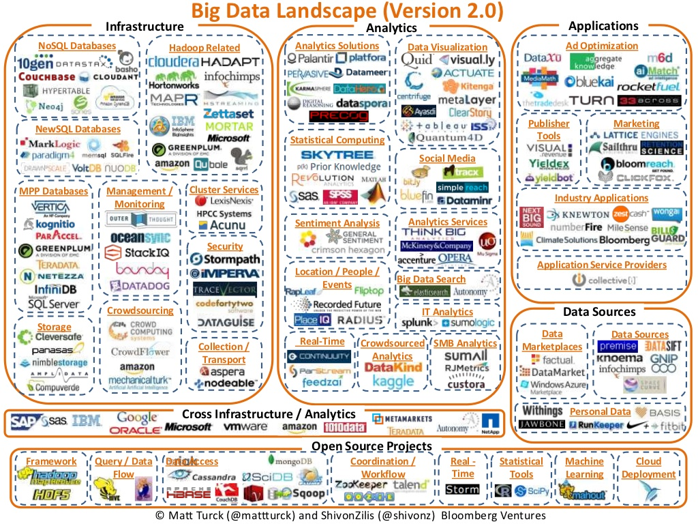
Big Data Landscape 2012
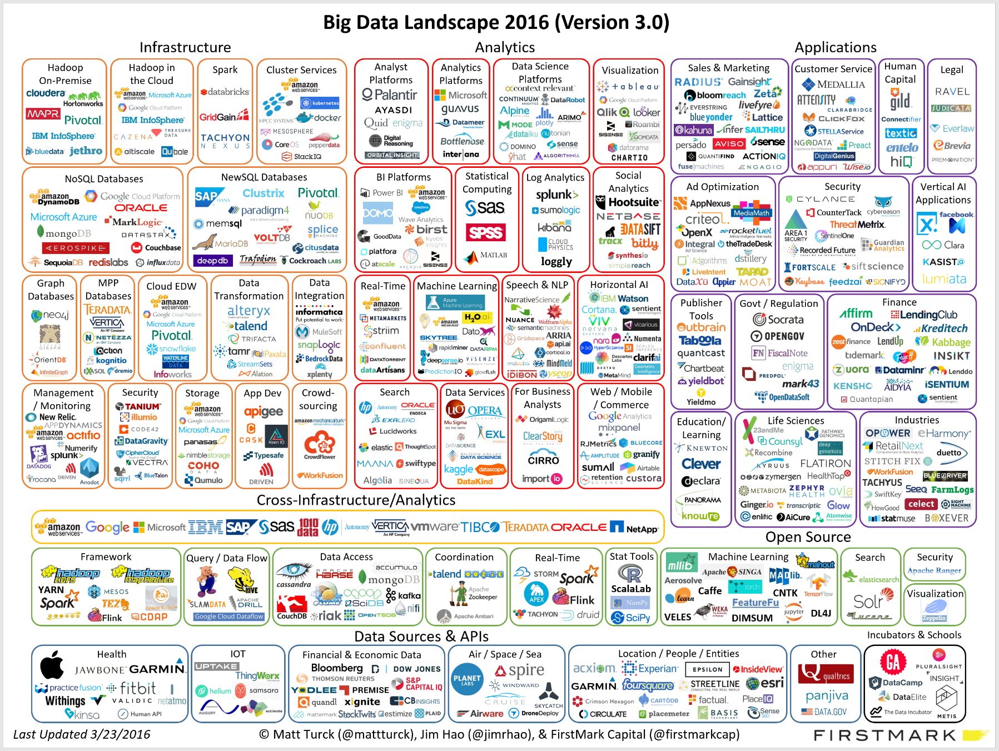
Big Data Landscape 2016
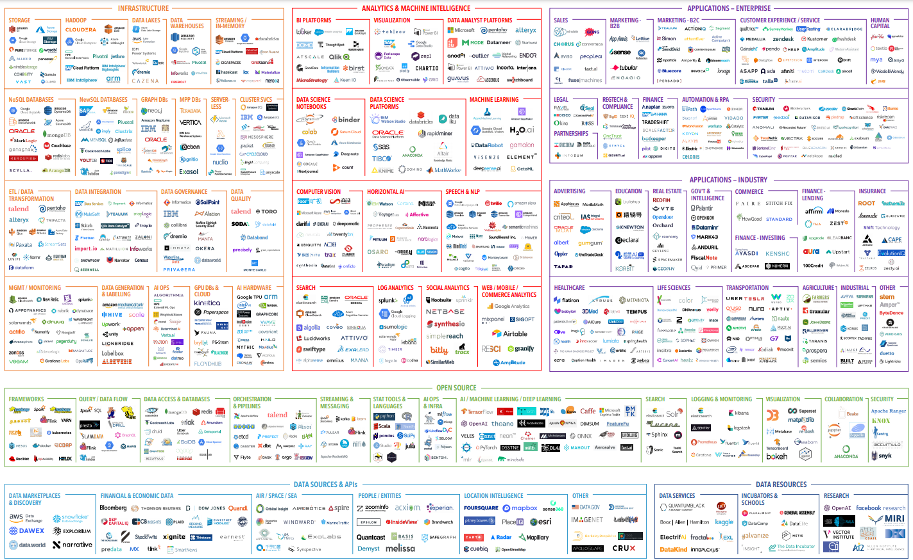
Big Data Landscape 2020
Agenda
Introduction
Data
DBMS, Big Data, Cloud solutions
Data Analytics
Data Management and Data Governance
Visualization of Data
Statistics & Probability
Processing
Artificial Intelligence (AI)
Machine Learning (ML)
What is Data Management?
Having data and using it means it needs to be managed.
The Data Management Body of Knowledge (DMBOK) model defines how to manage data in a professional organisation.
DAMA-DMBOK represents data management in the form of 11 Knowledge Areas, represented on the famous DAMA Wheel.
At the heart of data management is Data Governance.
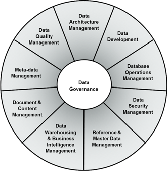
Source: “DAMA-DMBOK: Data Management Body of Knowledge”
What is Data Governance?
Data Governance
Data governance is a system for defining who within an organization has authority and control over data assets how those data assets may be used.
It encompasses the people, processes, and technologies required to manage and protect data assets.
Goals of Data Governance
Data Governance
Define, approve and communicate data strategies, policies, standards, architecture and metrics (KPIs)
Follow and enforce compliance with law, policies, standards, architecture and procedures
Sponsor, follow and control delivery of data management projects and services
Manage and solve data related issues
Understand and advocate importance and value of data sets
Topics Closely Related to Data Governance
Data Governance
Four examples of topics closely related to data governance are:
Data stewardship: a functional role in data management and governance, with responsibility for ensuring that data policies and standards turn into practice within the steward’s domain
Data quality: a measure of the condition of data based on factors such as accuracy, completeness, consistency, reliability and whether it’s up to date
Master data management: a discipline in which business and IT work together to ensure the uniformity, accuracy, stewardship, semantic consistency and accountability of the enterprise’s official shared master data assets
GDPR: the biggest data privacy use case in Data Governance of recent years
GDPR - what is?
GDPR
Regulation on the protection of natural persons with regard to the processing of personal data and on the free movement of such data, and repealing Directive 95/46/EC (General Data Protection Regulation)
GDPR - what is?
The General Data Protection Regulation is the toughest privacy and security law in the world replacing national data protection laws of all EU member states.
Though it was drafted and passed by the European Union (EU), it also has international reach - applying to any organization that processes data of EU data subjects.
The regulation was put into effect on May 25, 2018.
Fines for non-compliance will increase substantially up to a maximum fine of € 20 million or 4% of global annual sales, whichever is higher
GDPR - why?
GDPR IS ABOUT GIVING CONTROL OVER PERSONAL DATA BACK TO PEOPLE
No single set of rules in EU
Uncontrolled collection and storage of personal data
Inability to withdraw from direct marketing
No control over provided consent
Lack of procedures for data accuracy
GDPR has fundamentally changed the way companies must manage personal data
GDPR - sensitive personal data
Personal data
Article 4(1): “Any information relating to an identified or identifiable natural person (”data subject”); an identifiable person is one who can be identified, directly or indirectly, in particular by reference to an identifier such as a name, an identification number, location data, online identifier or to one or more factors specific to the physical, physiological, genetic, mental, economic, cultural or social identity of that person.”
SENSITIVE Personal data
Article 9(1): “Sensitive Personal Data” are personal data, revealing racial or ethnic origin, political opinions, religious or philosophical beliefs, trade-union membership;
HEALTH DATA (Art.4(15)) or sex life and sexual orientation
GENETIC DATA (Art.4(13))
BIOMETRIC DATA (Art.4(14))
Data relating to criminal offences and convictions are addressed separately (as criminal law lies outside the EU’s legislative competence)
Agenda
Introduction
Data
DBMS, Big Data, Cloud solutions
Data Analytics
Data Management and Data Governance
Visualization of Data
Statistics & Probability
Processing
Artificial Intelligence (AI)
Machine Learning (ML)
What is Data Visualization?
Data visualization tools and technologies are essential to analyze massive amounts of information and make data-driven decisions.
Data visualization helps to tell stories by curating data into a form easier to understand, highlighting the trends and outliers.
Data visualization can also unlock the ability of less technical users to explore and interact with data
A good visualization tells a story, removing the noise from data and highlighting the useful information.
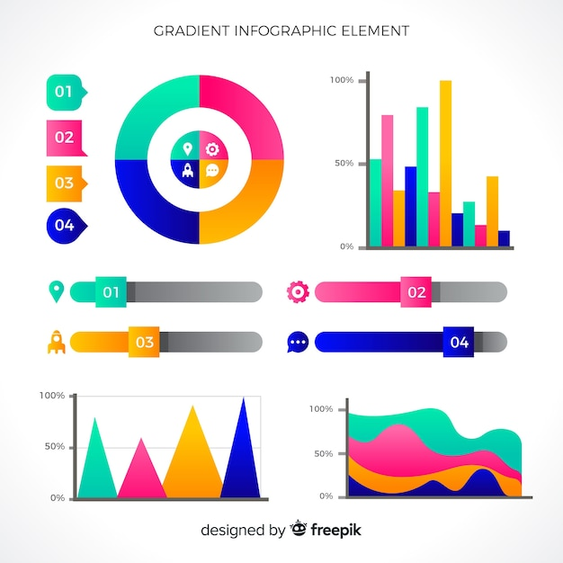
Examples of charts
The Power of Visuals
A picture tells more than a thousand words. A chart tells more than a million data points
Human Vision
Humans are visual by Nature
90 percent of information transmitted to the brain is visual
65 percent of the population are visual learners, graphics are key to engaging employees
The human brain processes Visual data 60.000 times better than Textual data
A stand-your-ground law, sometimes called a “line in the sand” or “no duty to retreat” law, provides that people may use deadly force when they reasonably believe it to be necessary to defend against certain violent crimes (right of self-defense). Under such a law, people have no duty to retreat before using deadly force in self-defense, so long as they are in a place where they are lawfully present.
An upside down Y-axes with descending (instead of ascending) values to the top might for a moment give the wrong impression that the ‘Stand your ground law’ was positive in relation to gun deaths
Information Visualization Do’s
Align with the data savviness of end user
Choose the right chart type with respect to your data
Describe keywords, KPI’s, terms, metrics
Design a simple and understandable data model
Pre-filter a dashboard to information that is relevant for the user
Make charts with the Data-Ink ratio in mind
Chart
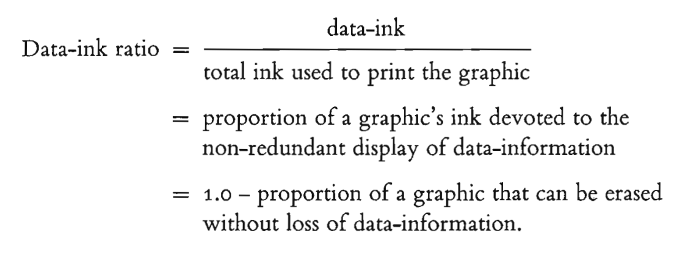
Escher
Information Visualization Don’ts
Don’t use Pie Charts (Google: save the pies for dessert)
Don’t overload the (Dashboard) user with information
Don’t present various unknown values
Don’t use KPI with a bad metric or no target/context
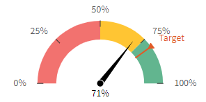
Chart
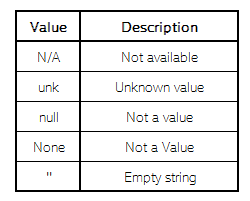
Chart
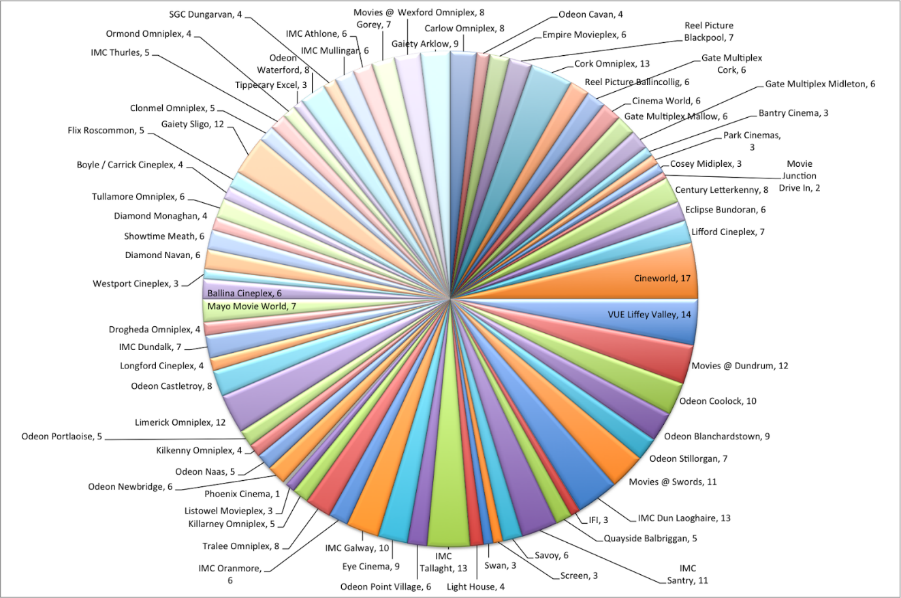
Chart
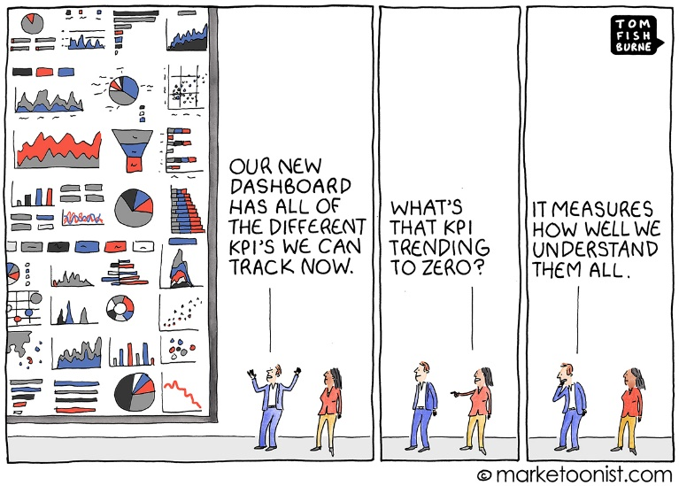
Chart
Information Visualization Do’s
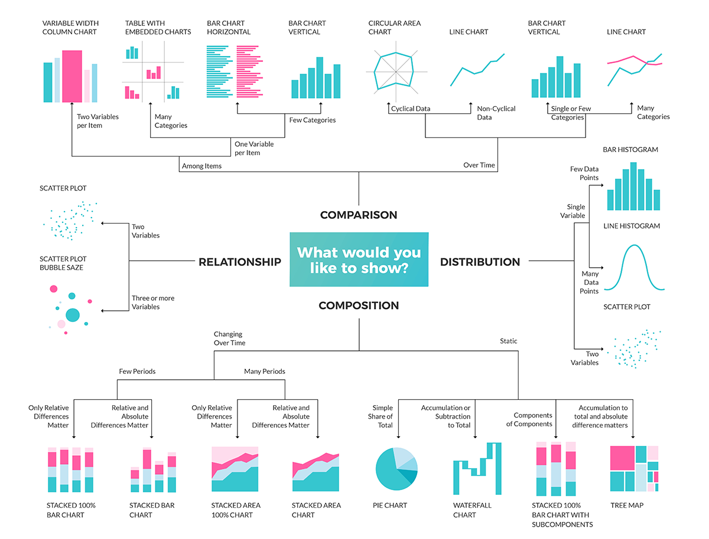
Do’s
Agenda
Introduction
Data
DBMS, Big Data, Cloud solutions
Data Analytics
Data Management and Data Governance
Visualization of Data
Processing
Artificial Intelligence (AI)
Machine Learning (ML)
Data Mining
Data mining[@chakrabarti2006data]
… Is the process of extracting and discovering patterns in large data sets
… Involving methods at the intersection of machine learning, statistics, and database systems.
It is an interdisciplinary subfield of computer science and statistics
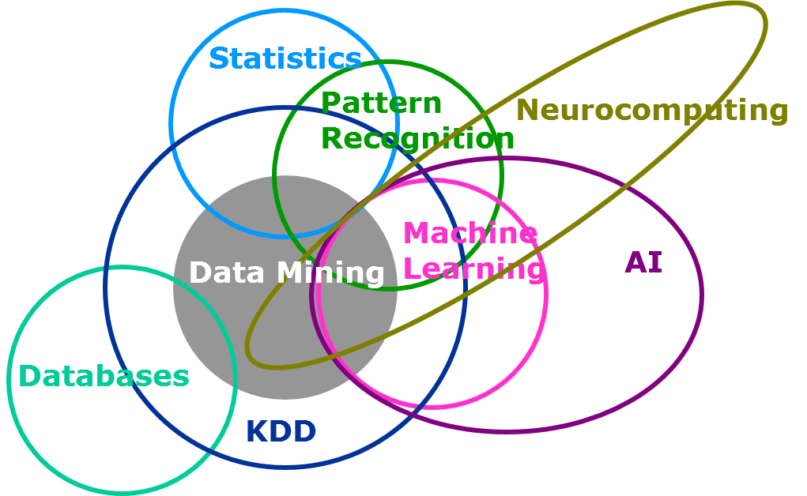
AI, Data Mining, and Machine Learning
Machine Learning
Machine learning (ML) is a field of study in artificial intelligence
The development and study of statistical algorithms that can learn from data
… and generalize to unseen data and thus perform tasks without explicit (coding) instructions
Machine Learning[@mitchell1997machine] is the study of algorithms that
Improve their performance \(P\)
At some task \(T\)
With experience \(E\)
A well-defined learning task is given by \(<P, T, E>\)
Classical Programming vs Machine Learning
Classical Programming
Machine Learning
A Simple Example: Calculator
Create a calculator that computes the sum of two numbers
Task: \(Z = X + Y\)
Classical Programming
Machine Learning
(Supervised) Machine learning is usually divided into two steps:
Train with Experience (training set)
Generalize to unseen data (test set) and evaluate the Performance
Training and test sets are not overlapping (they do not share the same data)
Training the model
Experience: training data
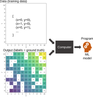
Testing the Model
Performance: checking accurate predictions
What is machine learning?
Taxonomy of Machine Learning
Machine Learning
Supervised Learning: models are trained using labeled data to learn a mapping from inputs to labels
Unsupervised Learning: algorithms find patterns, structures, and insights in unlabeled data without predefined answers
Reinforcement Learning: an agent learns to make optimal decisions by interacting with a dynamic environment through trial-and-error
Taxonomy of Machine Learning
Machine Learning
Supervised Learning: models are trained using labeled data to learn a mapping from inputs to labels
Classification: the label is nominal; spam detection (yes/no), diagnosis (healthy/sick)
Regression: the label is continuous; house price, temperature
Unsupervised Learning
Reinforcement Learning
Taxonomy of Machine Learning
Machine Learning
Supervised Learning
Classification: the label is nominal; spam detection (yes/no), diagnosis (healthy/sick)
Model-Based Methods: learn an explicit model to generalize from training data
Decision Trees
Neural Networks
Instance-Based Methods: store training examples and compare new inputs to known cases
k-Nearest Neighbors
Ensemble Methods: combine multiple models to improve performance
Random Forests
Regression
Model-Based Methods
Instance-Based Methods
Unsupervised Learning
Reinforcement Learning
Classification: Model-Based Methods
Training: learn a model to generalize from training data
flowchart LR
A[(Training Data)] --> B[Training / Model Learning]
B --> C[(Trained Model)]
Classification: Model-Based Methods
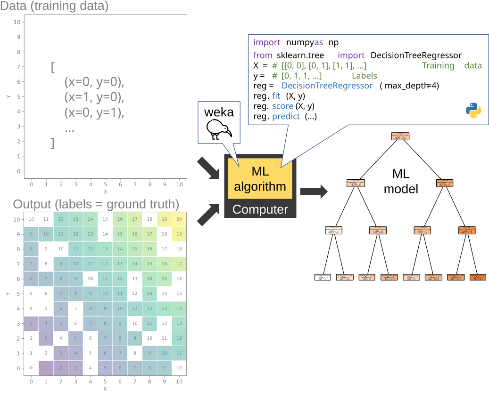
Classification: Model-Based Methods
Testing: verify the generalization of the model on unseen data
Use the trained model to make predictions on new data
Compare predictions to ground truth for performance evaluation
flowchart LR
A[(Test Data)] --> B[Trained Model]
B --> C[(Predicted Class)]
C --> D[Evaluation]
E[(Real Class / Ground Truth)] --> D
D --> F(Performance Metric)
Classification: Model-Based Methods
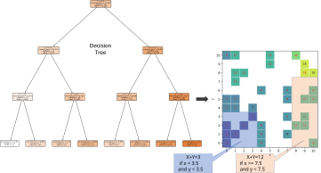
Classification: Instance-Based Methods
Instance-based methods: store training examples and compare new inputs to known cases
No explicit training phase
Rely on similarity or distance measures
Can be sensitive to noise and data size
flowchart LR
A[(Test Data)] --> B[Compare]
C[(Training Data)] --> B
B --> D[(Predicted Class)]
D --> E[Evaluation]
F[(Real Class / Ground Truth)] --> E
E --> G(Performance Metric)
Classification: Instance-Based Methods
k-nearest neighbors
Reinforcement Learning
Reinforcement machine learning algorithms interact with their environment by producing actions and discovering errors or rewards.
Trial and error search and delayed reward are the most relevant characteristics of reinforcement learning.
Allows machines and software agents to automatically determine the ideal behavior within a specific context in order to maximize its performance.
Simple reward feedback is required for the agent to learn which action is best - a reinforcement signal.
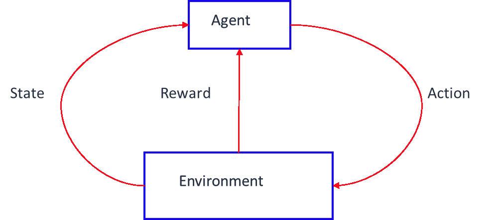
Reinforcement signal
Reinforcement Learning: Example
Using reinforcement learning, AlphaGo Zero was able to learn the game of Go from scratch.
It learned by playing against itself. - Alpha Go Zero was able to outperform the version of Alpha Go known as Master that has defeated world number one Ke Jie. - It only used black and white stones from the board as input features. - The agent is composed by a neural network. - AlphaGo Zero played against itself millions of times, and with time and its own creativity, it had managed to find these techniques used by the masters of Go.
What is Artificial Intelligence?
AI is concerned with getting computers to do tasks that would normally require human intelligence.
AI refers to a broad field of science encompassing not only computer science but also psychology, philosophy, linguistics and other areas.
AI Agent
Applications:
Computer Vision
Natural language processing (NLP)
Robotics & Motion
Planning and optimization
Knowledge capture
Artificial Intelligence (AI)
Alan Turing
“AI is the science and engineering of making intelligent machines, especially intelligent computer programs.”
AI: definition and types
According to the Computer Science view:” Intelligent agents” perceiving their environment and taking actions to achieve a goal.
Narrow or Weak AI performs some traditional goals
Reasoning, planning, learning, natural language processing, image recognition …
Artificial general intelligence (AGI), also called Strong AI:
Performs a full range of human abilities
Some predict it will be 2050 before we can achieve this
We are not sure if we will ever understand consciousness
Artificial intelligence and the rational agent - 1/2
Agent
Agent comes from the Latin “agere” - to do.
In AI we assume agents are rational and are expected to achieve the best outcome or best expected outcome if there is uncertainty. They also act “autonomously”!
There are other approaches based on human behaviour or human thought but this approach is the most amenable to scientific development.
Artificial intelligence and the rational agent - 2/2
Stuart Russell and Peter Norvig’s book, Artificial Intelligence - A Modern Approach, 3rd edition, defines a rational agent
“For each possible percept sequence, a rational agent should select an action that is expected to maximize its performance measure, given the evidence provided by the percept sequence and whatever built in knowledge the agent has.”
We expect agents to be rational and this depends on four things:
The performance measure that defines the criterion of success
The agent’s prior knowledge of the environment
The actions that the agent can perform
The agent’s percept sequence to date
Stuart Russell and Peter Norvig
Schematic of AI (the Computer Science view) - 1/2
External Task Environment
Percept: the collective term of all the agent’s perceptual inputs at any given time (obtained from sensors)
Program delivers the agent functionality: mapping sensor precept to actuator actions
Action undertaken by actuators to manipulate the environment
“Learn from experience, adapt, understand and handle abstract concepts, manipulate our environment”.
A program will run on a computing device, improving its performance through learning
Agent examples
Agent Description
Performance Measure
Environment
Actuators
Sensors
Central heating thermostat
Temperature, heating cost
Building, inhabitants, heating system
Inhabitant display, boiler, power
Temperature, keypad, phone, computer
Interactive sales chatbot
Number of sales
Customers, sale environment (internet, store, phone)
Robot, display, speaker
Keyboard, microphone, camera, kinesthetic sensors
Types of agents
Reflex agent: the program selects actions based on the current precept
simple to understand and program
e.g. central heating overheats, program selects the action to switch off the power
Model-based reflex agent: the agent has a model of the world
can make up for a lack of sensor (virtual world that doesn’t need sensor data)
program now looks at the percept and updates its own internal world (state)
program can assess the possible actions and future states and uses reflex agent approach to determine what actions to take
e.g. underwater vehicle loses visual sensors (silt - not enough light), continues using 3D mapped geometrical model
Types of agents
Goal-based agents
the program needs more than just sensors and an internal world to implement the agent’s functionality - it needs a goal
these programs are more versatile and flexible - can adapt to changes
e.g. autonomous vehicle can choose one of five exits from a motorway, the goal (safest, quickest, most scenic, cheapest, shortest)
Utility-based reflex agent
Utility is the scientific way economists measure an agent’s happiness; it’s more versatile than a yes/no happy or unhappy - it measures how useful it is.
e.g. Chatbot doctor assesses the efficacy of a treatment based on patient’s needs
{kind=link}